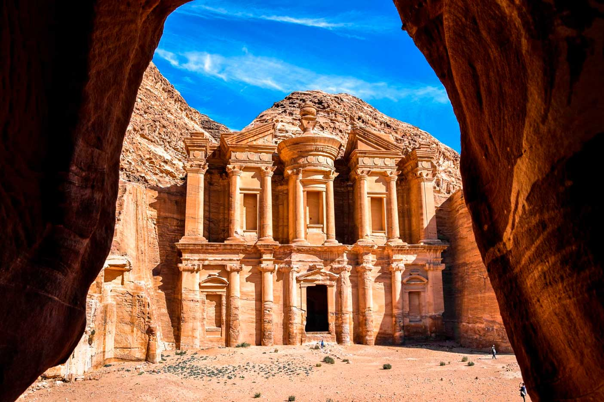
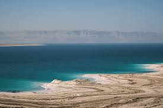
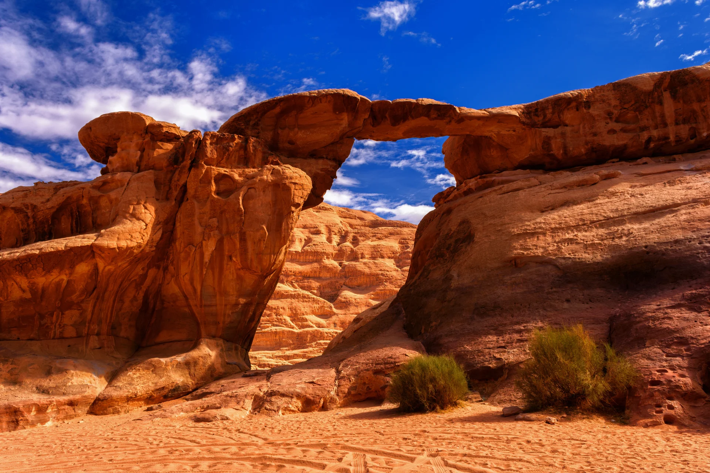
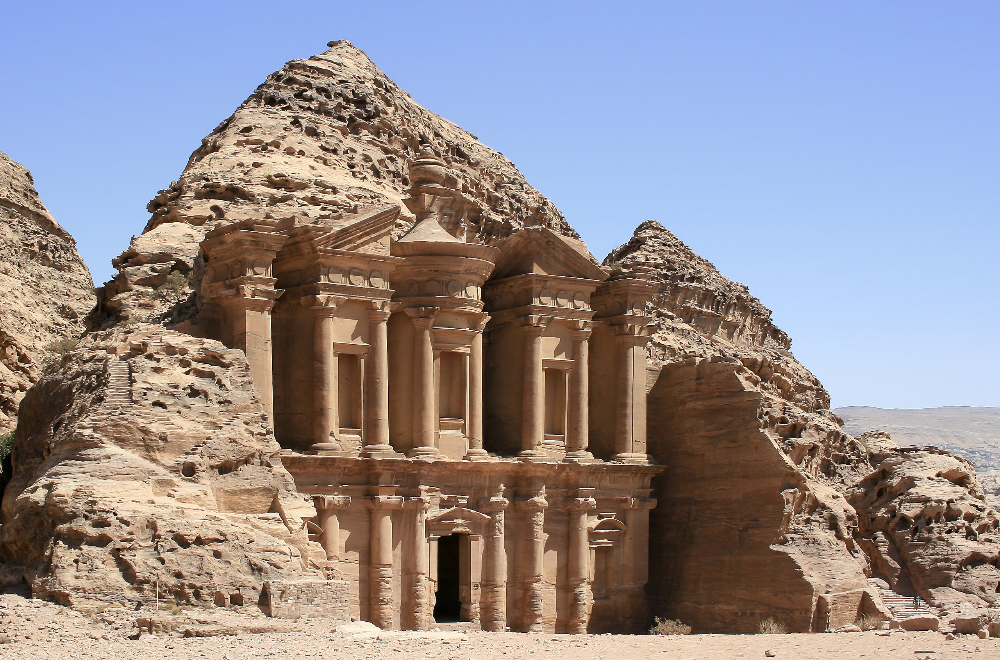
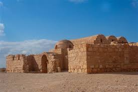
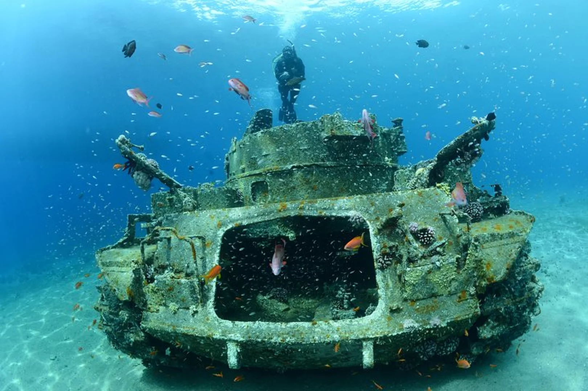
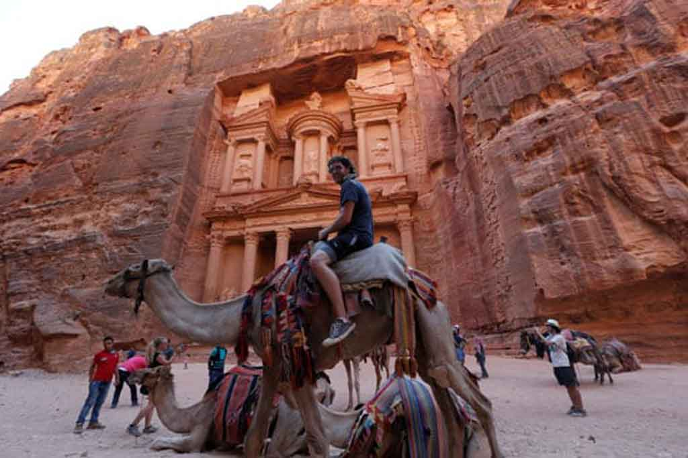
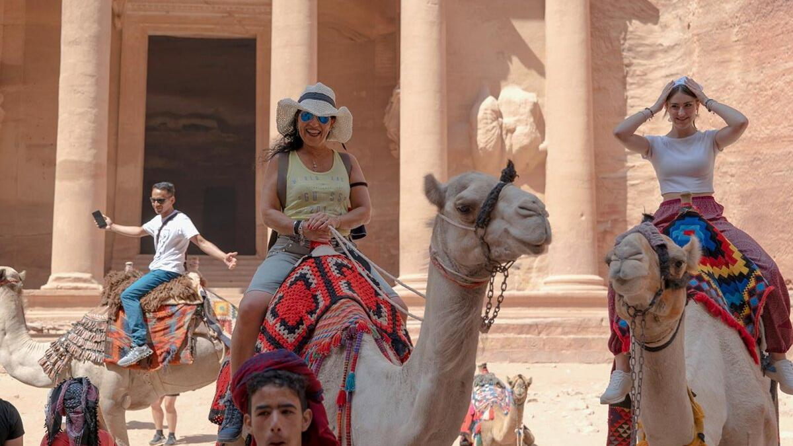

Petra abre todos los días desde las 6:00 a.m. hasta las 6:00 p.m. en verano y hasta las 4:00 p.m. en invierno. Se recomienda llegar temprano para evitar el calor y las multitudes.
Petra: la Ciudad Rosa de Jordania

Ubicación
Ciudad: Wadi Musa
País: Jordania
Descripción
Petra es una de las maravillas arqueológicas más impresionantes del mundo y el símbolo más reconocido de Jordania. Tallada en roca rosada por los nabateos hace más de 2.000 años, se ubica cerca de la ciudad de Wadi Musa, en el sur del país. Su entrada, el desfiladero del Siq, conduce al icónico Tesoro, una monumental fachada esculpida en piedra. Petra combina historia, arte y naturaleza, ofreciendo al visitante un viaje al pasado entre templos, tumbas y paisajes desérticos que revelan la grandeza de esta antigua civilización.
Actividades Turísticas

Mar Muerto
Flotar en las aguas saladas del Mar Muerto y disfrutar de sus energias.

Desierto Wadi Rum
Explorar el desierto de Wadi Rum, formaciones rocosas y cielos estrellados.

Petra
Recorrer la antigua ciudad de Petra, admirando sus templos y ciudades.

Castillo desierto
Visitar los castillos del desierto Qasr Amra y Qasr Kharana con su arquitectura.

Buceo en Aqaba
Explora la vida marina del Mar Rojo en un entorno natural impresionante.

Ciudad de Ammán
Descubre la Ciudadela que combinan historia antigua y vida moderna.
Cómo llegar a Petra
-
Ammán - Jordania
Punto de partida
-
Bus / Auto
Bus: 4 a 5 horas
Auto: 3 horas
-
Petra
Entrada principal al sitio arqueológico
Todo lo que debes saber antes de visitar
Petra se encuentra a unos 230 km al sur de Ammán. Puedes llegar en bus turístico (JETT) en unas 4 a 5 horas o en auto/tour privado en aproximadamente 3 horas. La ciudad más cercana es Wadi Musa, donde se ubican la mayoría de los hoteles.
El boleto general cuesta alrededor de 50 dinares jordanos (JD) para un día de visita. También hay opciones de 2 o 3 días y descuentos para residentes y grupos. La entrada incluye acceso al Siq, el Tesoro y las principales estructuras del sitio arqueológico.
Se recomienda llevar ropa ligera y transpirable, calzado cómodo para caminar largas distancias, sombrero o gorra, protector solar y suficiente agua. También es útil llevar una linterna si planeas visitar Petra by Night.
Las mejores épocas son primavera (marzo a mayo) y otoño (septiembre a noviembre), cuando las temperaturas son más suaves. En verano hace mucho calor y en invierno puede haber lluvias.
Sí, hay guías locales certificados y tours organizados en varios idiomas. También puedes realizar rutas de senderismo con guía hacia puntos panorámicos como el Monasterio o el Altar del Sacrificio. Es recomendable reservar con anticipación.
Reseñas de Nuestros Viajeros

Mario Castillo
"Muy buena la comunidad viajera, me gusta la asesoría personalizada para los viajes"

Sebastian Spagnolo
“Súper recomendado, fue una experiencia increíble y el viaje superó todas mis expectativas.”

Mora Pausini
“Gracias a la comunidad viajera pude resolver todas mis dudas con la asesoría y disfrutar por completo del viaje.”